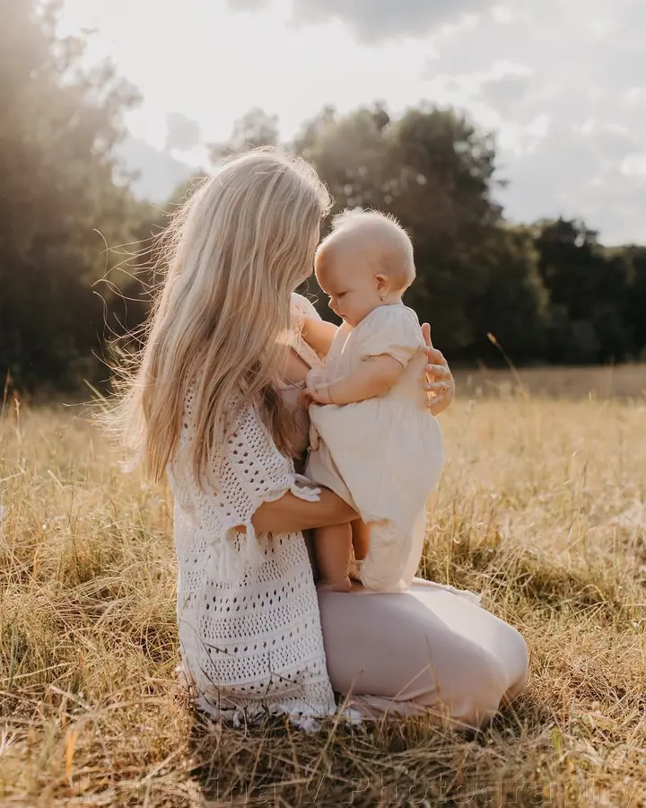
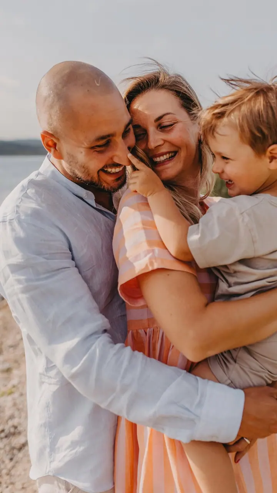
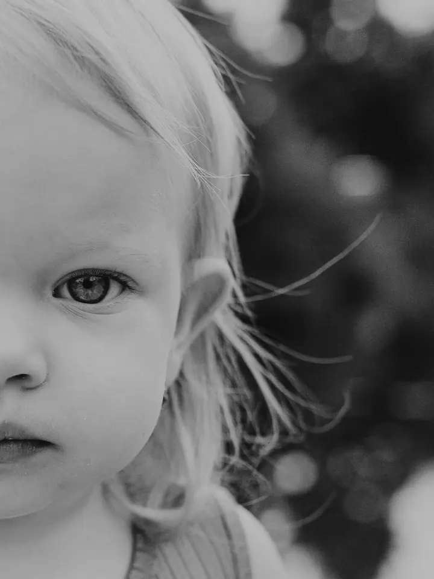

Rodinné focení
Fotím skutečné emoce, opravdové chvíle a lásku mezi vámi. Můžeme vyrazit do přírody, nebo zůstat v pohodlí vašeho domova, kde se můžete v klidu vyblbnout.

Jmenuji se Kateřina Dlapová, ale klidně mi říkejte Kačko. Jsem rodinná a svatební fotografka z Chebu a fotím po celé republice, ráda i v rodném Brně. Nejvíc mě baví skut…
Rezervovat termínFotit mě bavilo už na studiích, ale naplno jsem se focení začala věnovat, až když se mi narodila první dcera. Dnes žiju v Chebu a fotím v Karlovarském kraji, v rodném Brně a na Moravě i kdekoliv jinde v Česku.


Focení pro mě neznamená jen udělat dokonalou fotografii. Jde mi hlavně o chvíle, vzpomínky a emoce, které vás budou provázet celý život. Až se na fotky za pár let podíváte, chci, abyste se vrátili přesně do té chvíle.
Moc ráda objevuji nová místa. S dcerkami vyrážíme na dobrodružné výpravy a hledáme dokonalá i nedokonalá místa na focení. Fotit se dá ale i u vás doma nebo v ateliéru, a to v kteroukoli roční dobu, klidně i v únoru.
Co fotím
Fotím skutečné emoce, opravdové chvíle a lásku mezi vámi. Můžeme vyrazit do přírody, nebo zůstat v pohodlí vašeho domova, kde se můžete v klidu vyblbnout.
Váš svatební den fotím s citem pro detaily. Vybrat si můžete od tříhodinového focení obřadu až po celý den od příprav po večerní zábavu.
Focení ve dvou venku, doma nebo v ateliéru. Pomůžu vám, abyste se cítili uvolněně a byli sami sebou.
Těhotenské focení a první měsíce s miminkem. Šaty a doplňky si u mě můžete půjčit, vybereme je spolu při konzultaci.
Postup
Napište mi přes formulář nebo e-mailem, jaké focení si představujete. U svateb si rádi domluvíme schůzku, kde vám zodpovím všechny dotazy.
Společně vybereme to nejlepší místo, ať je to louka, ateliér, nebo váš domov. Když budete chtít, půjčím vám šaty a doplňky.
Nikam nespěcháme. Pomůžu vám, abyste se cítili uvolněně a byli sami sebou, a děti si mezitím můžou klidně hrát.
Fotky si vyberete z náhledů a upravené je dostanete v online galerii i vytištěné, u většího balíčku v dárkové krabičce s flashkou.
Otázky
Balíček Once upon a time s 20 upravenými fotografiemi stojí 2 700 Kč, balíček Your story s 30 fotografiemi a dárkovou krabičkou 3 100 Kč. Ceník platí pro rodinné, těhotenské, párové, lifestyle i newborn focení.
Od tříhodinového Mini za 9 000 Kč přes Half day (5 h, 12 000 Kč) a All day (10 h, 19 000 Kč) až po All in na 12 hodin za 22 000 Kč. Ve všech balíčcích jsou i tištěné fotografie a flash disk se všemi snímky.
Ano, fotím v celém Karlovarském kraji, v Brně a na Moravě i po celé republice. Doprava nad 50 km se účtuje 8 Kč za kilometr.
Ano, focení v ateliéru je za příplatek 800 Kč. Fotit můžeme ale i venku nebo u vás doma, kde se děti cítí nejlíp.
Termín se domluvíme individuálně. Pokud fotky potřebujete dřív, nabízím rychlejší zpracování do týdne za 1 000 Kč.